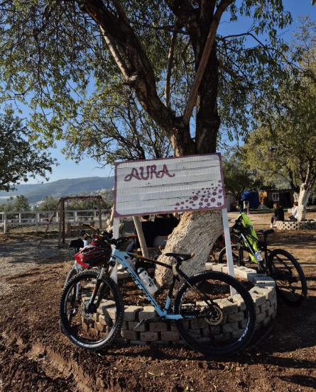
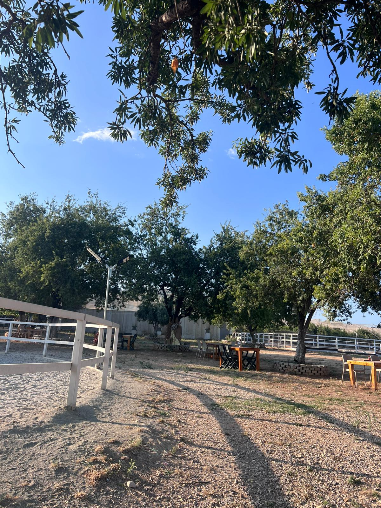
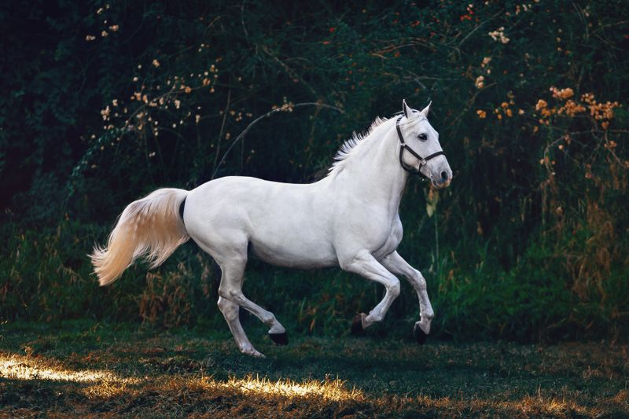
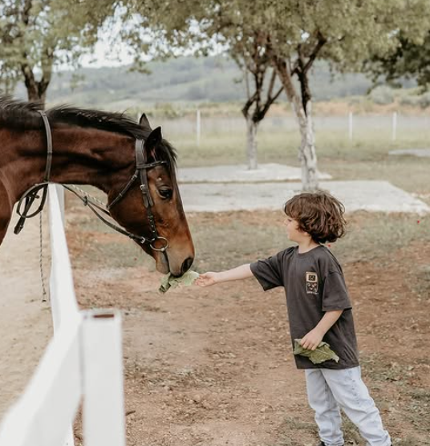

Hakkımızda
At sevgisiyle kurulan Aura At Çiftliği, doğa ve binicilik tutkusunu bir araya getiriyor.

Hikayemiz
Aura At Çiftliği, 2026 yılında at sevgisiyle yola çıkan küçük bir aile işletmesi olarak kuruldu. Amacımız, şehir hayatının stresinden uzaklaşmak isteyen herkese atlara dokunma, onları tanıma ve doğayla bağ kurma fırsatı sunmak.
Çiftliğimizde her atın bir ismi, bir karakteri ve özel bir hikayesi var. Onlara en iyi bakımı sağlamak, misafirlerimize güvenli ve keyifli bir deneyim sunmak en büyük önceliğimiz.
Bugün binicilik derslerinden doğa turlarına, çocuk atölyelerinden at bakım eğitimlerine kadar geniş bir hizmet yelpazesi sunuyoruz.
Çiftliğimizden
Günlük hayatımızdan birkaç kare.



Sevgi & Saygı
Tüm atlara ve misafirlerimize eşit ölçüde sevgi ve saygıyla yaklaşıyoruz.
Güvenlik
Her etkinlikte güvenlik standartlarına titizlikle uyuyoruz.
Doğa Dostu
Çevreye duyarlı uygulamalarla sürdürülebilir bir çiftlik işletiyoruz.